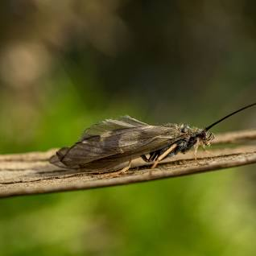
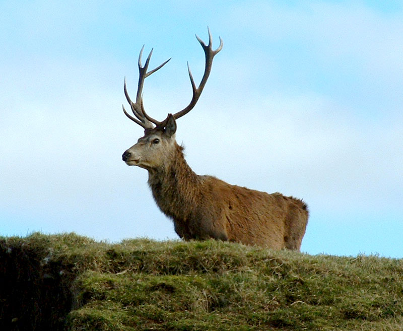
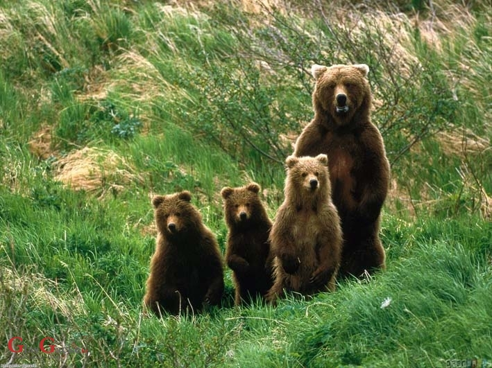
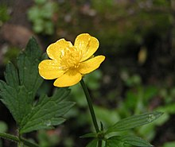

Tular
- - Kukci koji svojim izgledom podsjećaju na gusjenice.
- - Često se pojavljuju u velikom broju te mogu prouzročiti štetu na biljkama ako ih ima previše.

Jelen
- - Poznati po svojim impresivnim rogovima.
- - Većina vrsta jelenova baca svoje rogove jednom godišnje.
- - Oni su biljojedi i često su simbol divljine i prirode.

Medvjed
- - Simbol Plitvičkih Jezera.
- - Postoji osam vrsta medvjeda koji žive širom svijeta.
- - Imaju izuzetno razvijen osjet mirisa.
- - Izvrsni plivači te hiberniraju.

Zvonce
- - Poznate po otpornosti na ekstremne uvjete, njihova sposobnost da rastu na siromašnom tlu i izdrže sušu čini ih pogodnim za planinske krajave.

Zlatica
- - Poznate po svojoj ljekovitosti, za liječenje određenih tegoba poput kožnih bolesti ili bolova, ali i sadrže toksične spojeve.